第4章 数制转换和信息编码
什么是数制
数制就是 进位计数制，是人为定义的带进位的计数方法。
对于任意一种进制——X 进制，表示每一位置上的数运算时都是 逢 X 进一位。
数制有很多种，例如：
- 十进制：逢十进一
- 星期可看作七进制
- 年月可看作十二进制
无论哪种数制，都包含两个基本要素：
- 基数
- 位权
基数
在一个计数制中，表示每个数位上可用字符的个数，称为该计数制的 基数。
| 数制 | 可使用的数字/字符 | 基数 |
|---|---|---|
| 十进制 | 0～9，共 10 个 | 10 |
| 二进制 | 0、1，共 2 个 | 2 |
| 八进制 | 0～7，共 8 个 | 8 |
| 十六进制 | 0～9、A～F，共 16 个 | 16 |
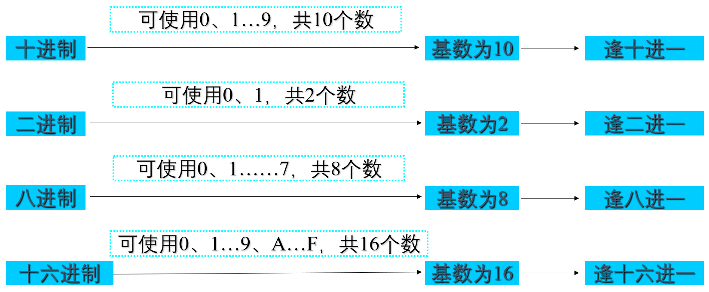
位权
位权是以 基数为底、数字所在位置的序号为指数 的整数次幂。
例如，在十进制中，数字 5 位于不同位置时：
- 个位上的 5 表示 5
- 十位上的 5 表示 50
- 小数点后第 1 位上的 5 表示 0.5
其关键在于不同位置的 位权不同。
位权的两个要素：
- 基数
- 位置序号
位置序号排列规则：
- 小数点左边：从右向左依次为
0、1、2、3、…… - 小数点右边：从左向右依次为
-1、-2、-3、……
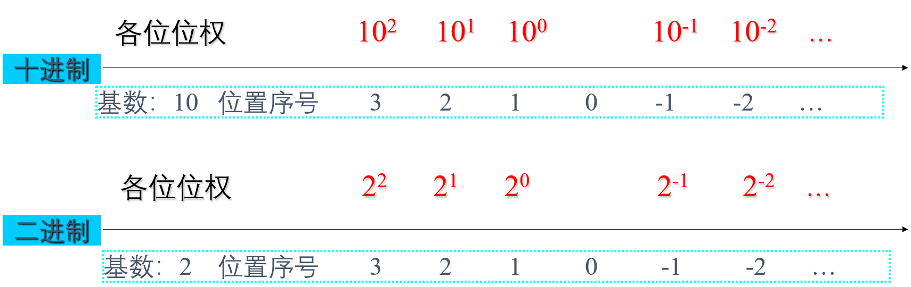
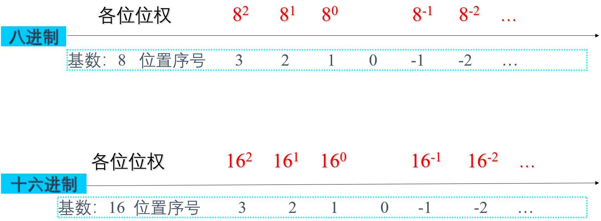
重点：
任何进制数转换为十进制数，只需 按权展开 即可。
:::
二进制
现代电子计算机使用 0 和 1 表示的二进制进行计数。
计算机使用二进制的主要原因：
- 技术实现简单：逻辑电路通常只有打开和关闭两种状态，可分别用
1和0表示。 - 操作规则简单：二进制运算规则比十进制简单，有助于简化算术单元结构并提高运算速度。
- 处理简单：计算机只能处理二进制代码形式的指令和数据，因此所有信息都必须转换成二进制形式。
- 适合逻辑运算：二进制
0和1可对应逻辑量“假”和“真”。
二进制转十进制
采用 按权展开。
教材示例：
(11011.01)<sub>2</sub> = (27.25)<sub>10</sub>
展开为：
1×2^4 + 1×2^3 + 0×2^2 + 1×2^1 + 1×2^0 + 0×2^-1 + 1×2^-2
= 27.25
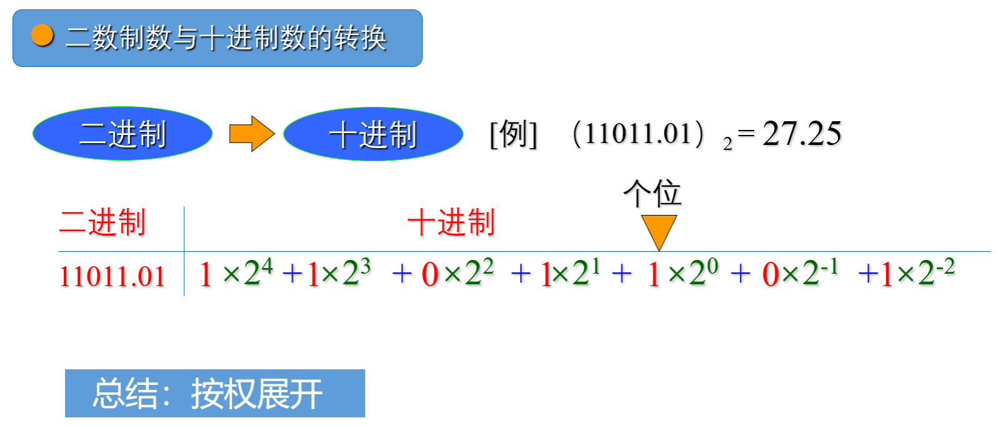
十进制转二进制
教材总结：
- 整数部分：除 2 取余，自底向上
- 小数部分：乘 2 取整，自顶向下
教材示例：
(18.8125)<sub>10</sub> = (10010.1101)<sub>2</sub>
八进制
八进制的数据范围为：
0～7
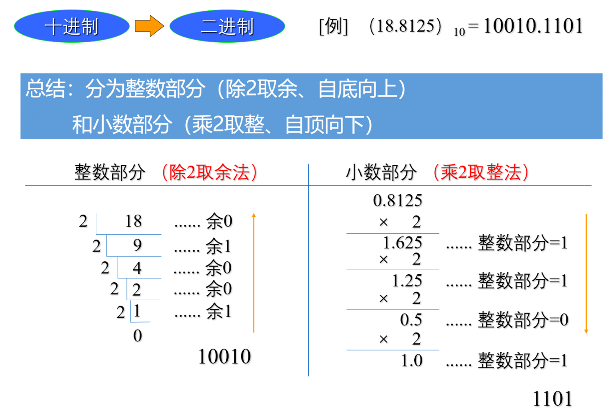
八进制转十进制
采用按权展开。
教材示例：
(1246.12)<sub>8</sub> = (678.15625)<sub>10</sub>
展开：
1×8^3 + 2×8^2 + 4×8^1 + 6×8^0 + 1×8^-1 + 2×8^-2
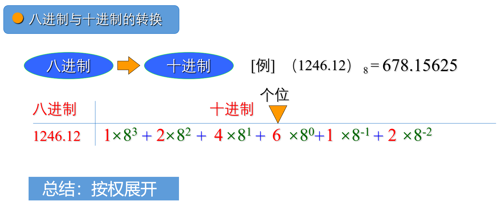
十进制转八进制
教材总结：
- 整数部分：除 8 取余，自底向上
- 小数部分：乘 8 取整，自顶向下
教材示例：
(678.156)<sub>10</sub> = (1246.117)<sub>8</sub>
十六进制
十六进制的数据范围为：
0～9、A～F
其中：
| 十六进制 | 十进制 |
|---|---|
| A | 10 |
| B | 11 |
| C | 12 |
| D | 13 |
| E | 14 |
| F | 15 |
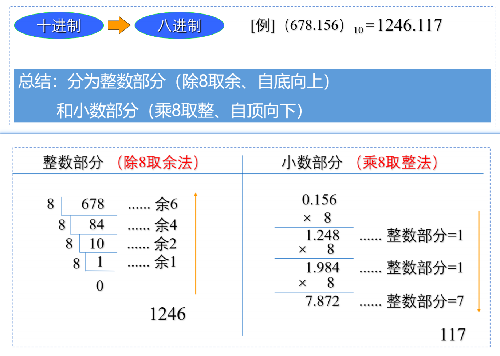
十六进制转十进制
采用按权展开。
教材示例：
(314.12)<sub>16</sub> = (788.07031)<sub>10</sub>
展开：
3×16^2 + 1×16^1 + 4×16^0 + 1×16^-1 + 2×16^-2
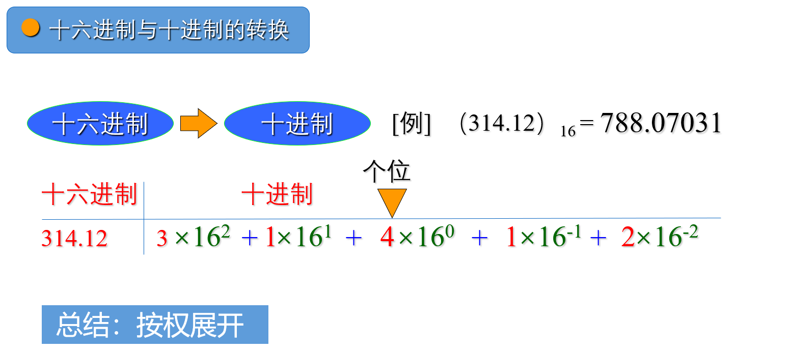
十进制转十六进制
教材总结：
- 整数部分：除 16 取余，自底向上
- 小数部分：乘 16 取整，自顶向下
教材示例：
(314.31)<sub>10</sub> = (13A.4F)<sub>16</sub>
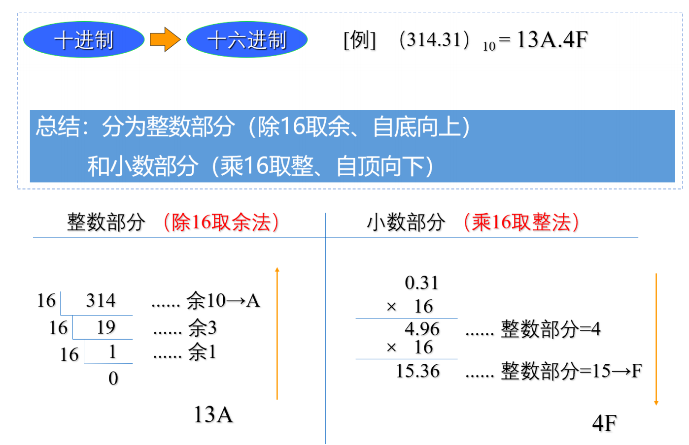
二进制、八进制、十六进制之间转换
二进制与八进制
二进制与八进制之间存在特殊对应关系：
23 = 8
因此：
- 二进制转八进制：3 位并 1 位
- 八进制转二进制：1 位拆 3 位
二进制转八进制时：
- 从小数点向左右分组
- 每 3 位一组
- 位数不足补
0
教材示例：
(11101.1101)<sub>2</sub> = (35.64)<sub>8</sub>
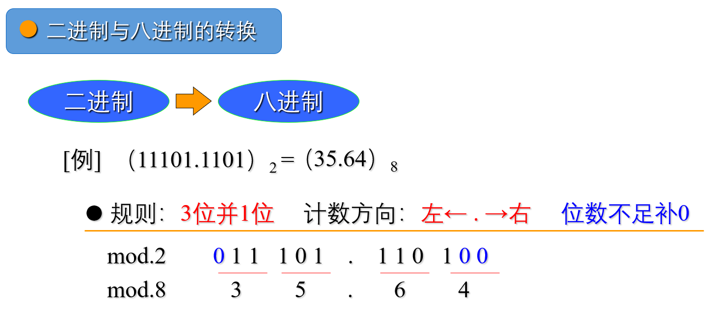
八进制转二进制示例：
(45.61)<sub>8</sub> = (100101.110001)<sub>2</sub>
二进制与八进制之间：
3 位二进制 ↔ 1 位八进制
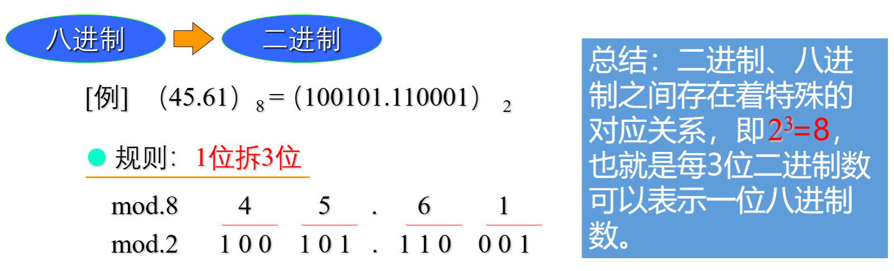
二进制与十六进制
二进制与十六进制之间：
24 = 16
因此：
- 二进制转十六进制：4 位并 1 位
- 十六进制转二进制：1 位拆 4 位
教材示例：
(111101.010111)<sub>2</sub> = (3D.5C)<sub>16</sub>
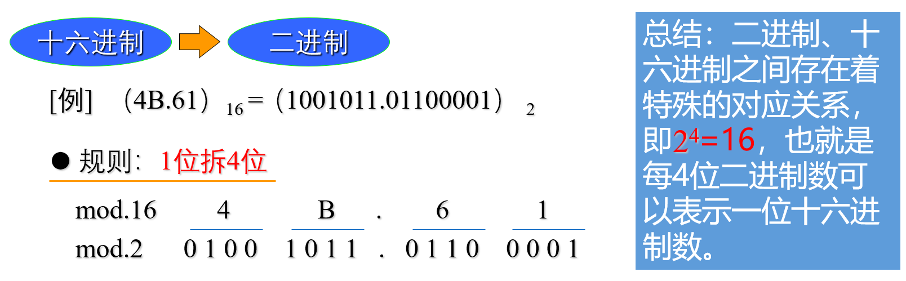
十六进制转二进制示例：
(4B.61)<sub>16</sub> = (1001011.01100001)<sub>2</sub>
二进制与十六进制之间：
4 位二进制 ↔ 1 位十六进制
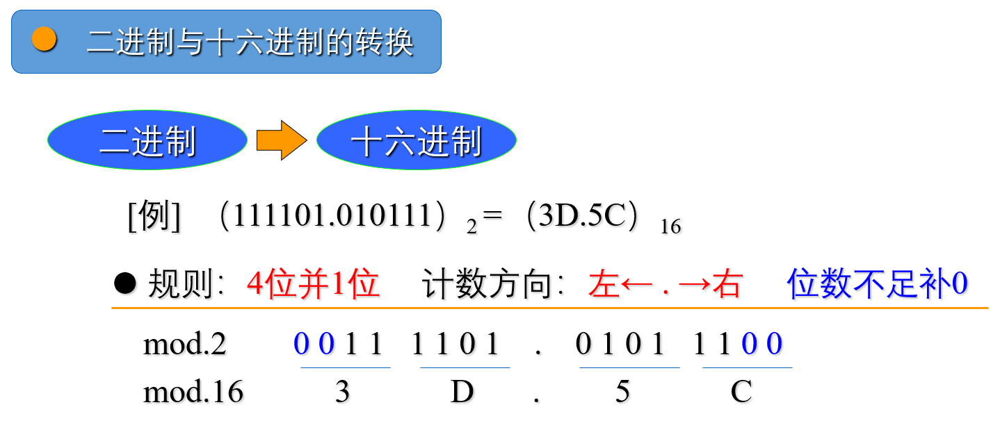
二进制运算
信息，包括图像、符号、图形和声音等，需要按照规定好的二进制形式表示，计算机才能处理。
这些规定的形式就是 信息编码，本质上就是把信息转化为 0 和 1。
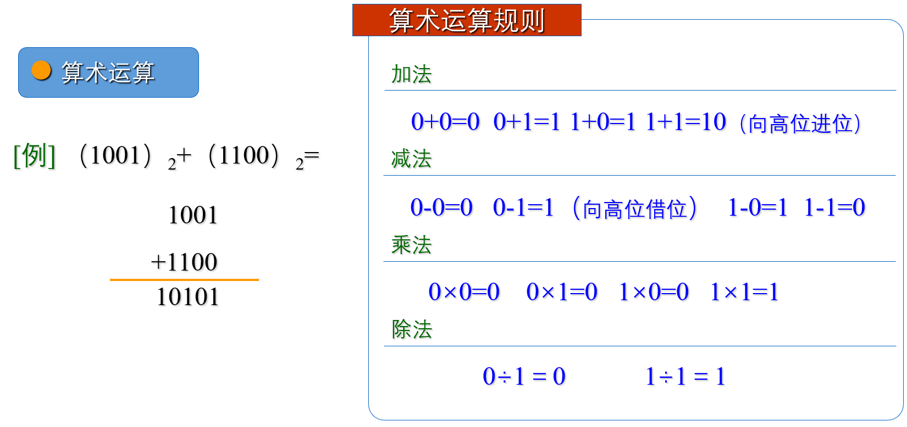
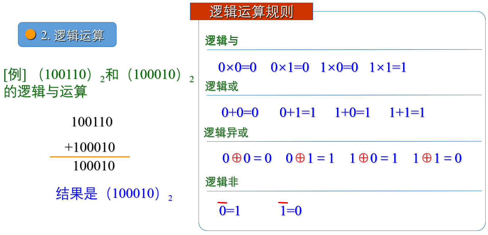
算术运算规则
加法
0 + 0 = 0
0 + 1 = 1
1 + 0 = 1
1 + 1 = 10 （向高位进位）
教材示例：
1001
+ 1100
------
10101
减法
0 - 0 = 0
0 - 1 = 1 （向高位借位）
1 - 0 = 1
1 - 1 = 0
乘法
0 × 0 = 0
0 × 1 = 0
1 × 0 = 0
1 × 1 = 1
除法
0 ÷ 1 = 0
1 ÷ 1 = 1
逻辑运算规则
逻辑与
0 ∧ 0 = 0
0 ∧ 1 = 0
1 ∧ 0 = 0
1 ∧ 1 = 1
逻辑或
0 ∨ 0 = 0
0 ∨ 1 = 1
1 ∨ 0 = 1
1 ∨ 1 = 1
逻辑异或
0 ⊕ 0 = 0
0 ⊕ 1 = 1
1 ⊕ 0 = 1
1 ⊕ 1 = 0
逻辑非
¬0 = 1
¬1 = 0
ASCII 码
在计算机中，各种字母和符号必须使用规定的二进制码表示，计算机才能处理。
在西文领域，目前普遍采用 ASCII 码（American Standard Code for Information Interchange，美国标准信息交换码）。
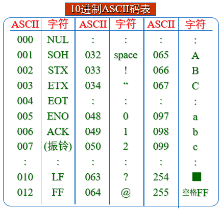
教材指出：
- 每个字符使用 7 位二进制数表示
- 共可表示 128 种状态
常见 ASCII 十进制编码示例：
| 字符 | ASCII 十进制值 |
|---|---|
| '\0' | 0 |
| 空格（space） | 32 |
0 | 48 |
1 | 49 |
2 | 50 |
? | 63 |
@ | 64 |
A | 65 |
B | 66 |
C | 67 |
a | 97 |
b | 98 |
c | 99 |
汉字编码
教材将汉字相关编码分为以下几类。
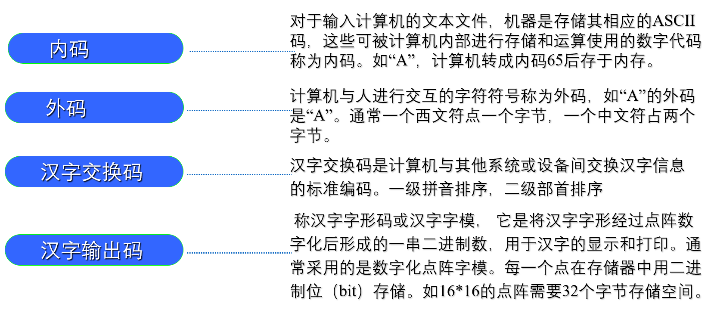
内码
对于输入计算机的文本文件，机器需要使用相应的数字代码在计算机内部进行存储和运算，这类数字代码称为 内码。
教材示例：字符 A 可转换为内码 65 后存入内存。
外码
计算机与人进行交互时使用的字符符号称为 外码。
教材举例：字符 A 的外码就是 A。
通常：
- 一个西文符号占一个字节
- 一个中文符号占两个字节
汉字交换码
汉字交换码是计算机与其他系统或设备之间交换汉字信息的标准编码。
教材描述：
- 一级按音排序
- 二级按部首排序
汉字输出码
汉字输出码又称 汉字字形码 或 汉字字模。
它是将汉字字形经过点阵数字化后形成的一串二进制数，用于汉字的显示和打印。
通常使用数字化点阵字模，每一个点在存储器中使用一个二进制位（bit）存储。
例如：
16 × 16点阵共有 256 位- 需要
256 ÷ 8 = 32字节的存储空间
离散数学联结词
非 ¬
¬P：
- 如果
P为假，结果为真 - 如果
P为真，结果为假
与 ∧
P ∧ Q：
只有 P 与 Q 同时为真，结果才为真，否则结果为假。
或 ∨
P ∨ Q：
P 与 Q 至少有一个为真，结果为真，否则结果为假。
随堂检测
1. 二进制数 00101100 和 01010101 异或的结果是（ ）。
- A.
00101000 - B.
01111001 - C.
01000100 - D.
00111000
查看答案
答案：B
2. 如果开始时计算机处于小写输入状态，现在有一只小老鼠反复按照 CapsLock、字母键 A、字母键 S 和字母键 D 的顺序循环按键，即 CapsLock、A、S、D、CapsLock、A、S、D、……，屏幕上输出的第 81 个字符是字母（ ）。
- A. A
- B. S
- C. D
- D. a
查看答案
答案：C
3. 二进制数 00100100 和 00010100 的和是（ ）。
- A.
00101000 - B.
01001001 - C.
01000100 - D.
00111000
查看答案
答案：D
4. 在十六进制表示法中，字母 A 相当于十进制中的（ ）。
- A. 9
- B. 10
- C. 15
- D. 16
查看答案
答案：B
5. 在二进制下，1011001 + （ ） = 1100110。
- A.
1011 - B.
1101 - C.
1010 - D.
1111
查看答案
答案：B
6. 字符 0 的 ASCII 码为 48，则字符 9 的 ASCII 码为（ ）。
- A. 39
- B. 57
- C. 120
- D. 视具体的计算机而定
查看答案
答案：B
7. 十进制小数 13.375 对应的二进制数是（ ）。
- A.
1101.011 - B.
1011.011 - C.
1101.101 - D.
1010.01
查看答案
答案：A
8. 与十进制数 28.5625 相等的四进制数是（ ）。
- A.
123.21 - B.
131.22 - C.
130.22 - D.
130.21
查看答案
答案：D
9. (2008)<sub>10</sub> + (5B)<sub>16</sub> 的结果是（ ）。
- A.
(833)<sub>16</sub> - B.
(2099)<sub>10</sub> - C.
(4063)<sub>8</sub> - D.
(100001100011)<sub>2</sub>
查看答案
答案：B
10. 十进制小数 82.046875 对应的十六进制数是（ ）。
- A.
80.012 - B.
52.0C - C.
4F.075 - D.
52.075
查看答案
答案：B